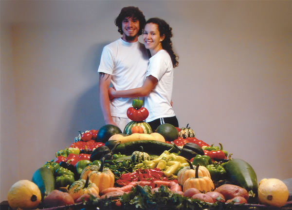
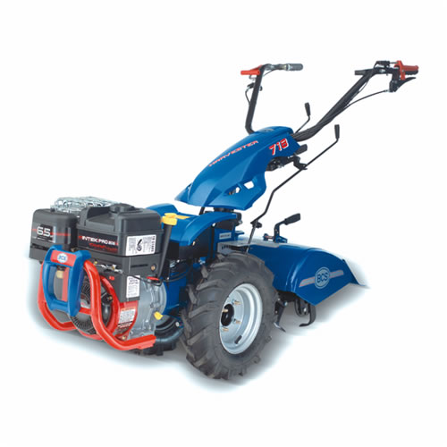
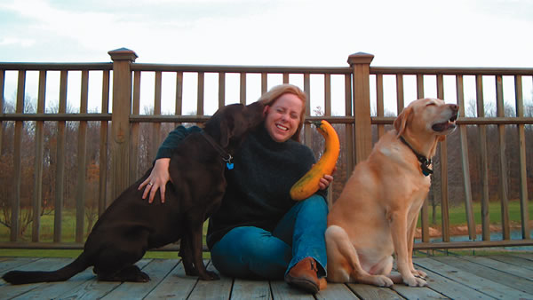
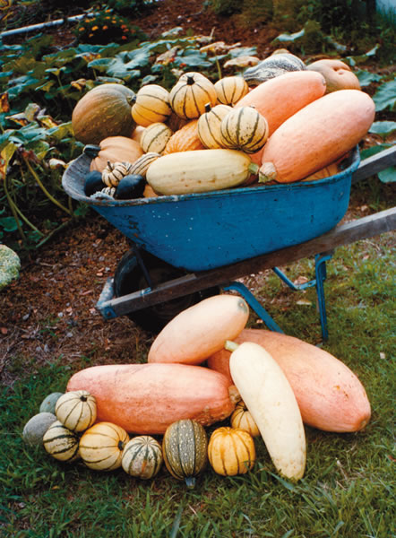
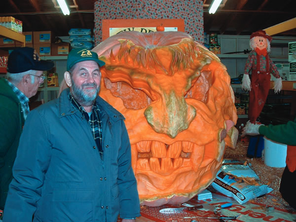
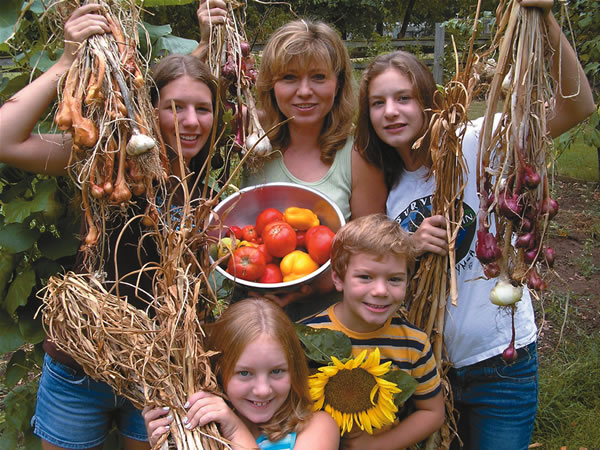
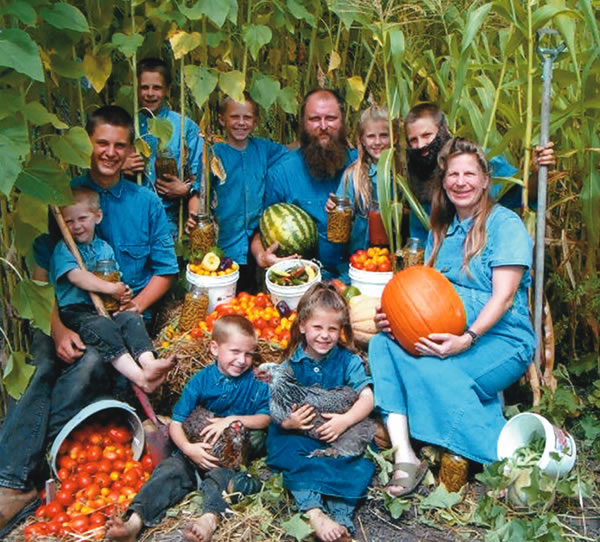
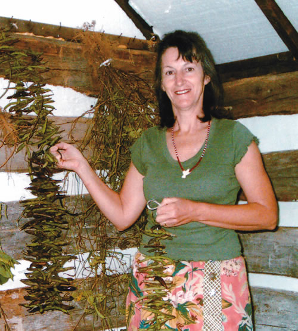
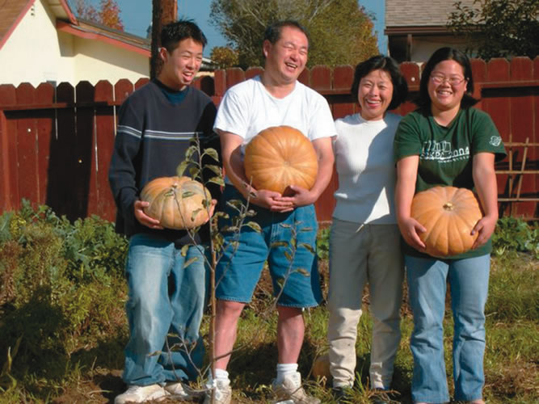

Our First Gardening Adventure
There are many reasons that my boyfriend and I dig gardening. We are both 22 years old and started our first organic garden together this past summer. We grew on a plot of previously untouched land in Meding, Ohio. In order to be sure that we are eating the healthiest food (free of chemical fertilizers and pesticides) with the highest nutritional values, we knew we’d have to produce it ourselves. This allowed us to make a connection with our Mother Earth while being self-sufficient and living a naturally healthy lifestyle. We learned a lot about the art of composting, beneficial insects and organic fertilizers. This hands-on experience will aid us in pursuing our future as organic farmers.
We loved our gardening adventure because we were able to share our love for healthy, nutritious foods with our families and friends (and their families, too!). Our understanding continues to grow about the importance of taking from Mother Earth her beautiful gifts, but more importantly, returning to her an equal amount of love and care. With the proper care, knowledge and love, our plants bloomed to perfection. We love to garden and look forward to the ongoing give-and-take relationship we have with the Earth and each other. Our plans for a much larger vegetable, flower, mushroom and herb garden are coming together for 2006. We look forward to working together to produce healthy, nutritious foods and beautiful flowers for all to enjoy! We’ve learned what a little hard work and dedication can do, and that is what we dig about gardening!
Miranda Marcano and Brandon Pappas
Mansfield, Ohio
The Astounding Taste of Fresh Food
What happened to me yesterday - awakening to find myself in a kitchen that smelled like my grandma’s - wasn’t something I’d counted on when I decided to subsidize our grocery bill with a garden. Before I knew it, I’d re-entered my childhood. I walked the lane to my garden day after day, planted, waited and replanted.
Finally my harvest began. I got a canner and began making tomato sauce, pickles and relish. I froze corn, peas and beans, and shelled lima beans for the first time since I was about 10. My kitchen smelled of strawberries, pickle brine, tomatoes, onions, peppers and cabbage.
In all of this activity, I found a kind of peace and wholeness that eluded me when I was making hurried dashes through the grocery store and reaching for clean, attractive produce that got “rained” on periodically from the sprinklers above the displays. In the busyness of driving to and from work, I’d gradually lost my enthusiasm for putting food on the table.
At first, my own garden produce was much less attractive than the kind I bought in town. It was amazing how much time I spent picking, scrubbing, peeling and otherwise preparing food. But I was completely astounded by the taste of fresh food, available day in and day out. Often I’d sit down to a meal and remark, “Everything we’re having tonight is from the garden.”
Joanne Lehman Apple Creek, Ohio
Companionship and Memories
Aunt Lou is my companion, recounting witty stories as I tend my plot. Soft meringue hair and moonstone eyes; artist and poet. I see her weathered red Formica counter and the “compost holder” that rested on it: a small cup that constantly spilled all manner of vegetable scraps. At 86, stooped with osteoporosis, she would putter out to her small garden and bury the day’s offerings with a broken shovel. This Depression kid didn’t throw away anything useful. Her tomatoes testified to their good upbringing.
Memories of Gram are all about food and hugs. As a child, we were co-conspirators at the table, cackling and snorting at secret jokes. I would keep her company as she’d bake with my mother, watching her gnarled old fingers working the paring knife around an apple, producing one continuous, exquisite peel. Laughter filled the room as we constructed pies.
Later, Mom is with me as I tuck the seeds into their welcoming beds. We plot and plan what will be frozen and what will be canned, licking our chops. I see her facial expressions: concentration as she pushes the tomatoes into their jars, satisfaction as she inspects the finished product. Now, I grin happily at every “ping” that emanates from my cooling jars.
My labs, Maggie (yellow) and Sally (chocolate), make a looping orbit around me. They are the gardening goofballs, chasing frogs and stealing tomatoes. Performers, not farmers. I appreciate their show, basking in the warmth of both the sun and the presence of those who came before.
Cara Proehl
Columbia Station, Ohio
Staying Connected
For me, gardening is somewhat of a guerrilla affair, as I employ methods that the people around me have never heard of. We had some compost and topsoil trucked in from a local garden center, and I spread it around the perimeter of our back yard. I didn’t dig into the existing soil at all. We placed some landscaping material over the ground and then shoveled the imported soil over it.
Another step I didn’t take was to box the bed in with lumber slats or any other kind of constraint. No one believed that the soil would stay where it was meant to. I knew it would. The soil I use is very rich with organic material such as horse manure, straw and other unidentifiable humus.
I planted a variety of vegetables, herbs, berries and wildflowers, not in normal rows but more like clumps. I mulched the plantings with dried grass clippings to help them retain moisture, then fertilized with blood meal and fish liquid.
My garden is abounding with life- not only plant life but ladybugs, spiders and the like. By employing organic gardening methods and enjoying success with them, I’m encouraging my neighbors and friends to do the same. I believe it is a small effort I can make in the struggle against rampant fossil fuel misuse, as well as creating a haven for the wildlife that urban sprawl displaces. It is a way for me to stay connected to the natural world.
Leah Patterson
Calgary, Alberta
Gardening is Paradise
Blue morning skies, ohia trees bursting with red blooms, afternoon clouds bringing showers and rainbows, a full-moon whale watch from the cliffs of South Point toward the vast Pacific Ocean - what more could one ask of paradise?
For me, the answer is gardening! No matter where my wanderings have taken me on this lovely planet, life is never complete without a food garden. To observe paradise is incomplete. I must dig, plant, tend and harvest to truly touch the soul and life of any land. This is what I love most about growing my own food - the mysterious essence of life itself passing through my hands, entering my thoughts and heart as I watch each miraculous leaf unfold, each flower bloom, each fruit form. How can I put into words the taste of a ripe avocado from our orchard? The pleasure of a bucketful of oranges every morning in May? The brimming buckets of lima and green beans all summer?
My husband started this organic farm in Hawaii. The partnership that has evolved over the last 11 years has sustained me through trials and hard times. Depressed Go sit with the chickens in the free-range field and watch their antics. (Chickens love to eat bananas and papayas, and nab live mice running from a mower!) Overwhelmed Spend time with the sheep in the macadamia nut field and adopt their stress-free pace. Grieving Do some watering in the tropical early morning light.
Farming challenges abound - voracious insects, root rot, unbelievable weeds, unpredictable weather patterns and “regulars” (zucchini, tomatoes) you cannot grow outside a greenhouse. But when all your successes finally grace your family’s table - well now, that is true paradise.
Pearl Maxner
Naalehu, Hawaii
Blissful Connections
Inexplicable joy ... This is the feeling I get when I garden. As a child growing up in the city, my parents afforded us the experience of having a small vegetable garden and even a few chickens and ducks. I dug the dirt and planted in the family garden but had little appreciation for the activity until my own garden healed me in a way I cannot truly describe.
I started this vegetable garden to grow some of my favorite vegetables. Then the need for ornamental flowers and shrubs began to call, and the garden chores began to swell. It was work and not very pleasurable at all.
Then, in the summer of 2004, my precious young nephew passed away after heart surgery. My family was devastated. I was lost. My 23-year-old nephew had been a chef and loved the fresh vegetables and herbs that I grew in the garden. It was something that we shared and enjoyed. After he died, I expanded the garden and included a new section in memory of him. When I work in the garden now it is not a chore; it is my time to connect with loved ones that passed on to me a love of gardening and of family. It is my time to heal and nurture. It is bliss.
Tracy Carter
Nashville, Tennessee
Giant Pumpkin Pride
I remember with horror being awakened as a child on Saturday mornings at 6:30 to weed the garden. I could never understand my father’s pride in his garden.
My father and I lost track of each other for several years. But we were reunited when I purchased my great-grandfather’s 1920s farmhouse from my dad. Soon I was planting my own small garden. My interest sparked Dad’s interest in me. He and I worked together to reclaim a three-acre parcel of the land in order to open a vegetable stand. These were awesome gardens!
My father’s obsession with growing giant pumpkins blossomed into his life’s ambition-to grow the world’s largest pumpkin. Even after being diagnosed with cancer, he maintained those pumpkins. My dad was in the hospital when he heard the news that he had broken the world record with a whopping 1,337-pound pumpkin (shown at left, with Charles Sr.).
Scott Cully, a professional pumpkin sculptor, contacted us about carving the great beast. That monster was carved and ready for the Guinness World Record cameras before Halloween in 2002. Dad was so proud as he sat with his great carved pumpkin for the news crew. He died in August 2003, having been a great father, husband, grandfather and friend. As for me, I continue to grow my garden every year and try to inspire interest in my son and daughter.
Sometimes when my family and I are gathered around the food that I have grown, I have a sense that my father is present. I hope that my children feel their grandfather’s, as well as their father’s, love for them.
Charles Houghton Jr.
Weare, New Hampshire
No Better Feeling
There is a kind of spirituality I find only by gardening. A special peace and solitude, a feeling of being one with the universe. The sun, warm on my back. The feel of soil, sifting through my gloveless fingers. The scent of earth and water. Tiny seeds carefully placed in pockets of moist compost, to emerge days later as wee green leaves. A rebirth each spring.
Optimism is indispensable to having a garden. There must be trust that insects and critters will take no more than their share and confidence that there will, indeed, be a harvest. Each seed and every transplant is a gesture of faith. The birds and worms frequently get more peas than we do. Even so, I will plant them again next year.
I can think of no better feeling than serving a meal made with my own fresh produce. I await the first radish each year with the same eagerness I had as a child. The last tomato picked before frost always makes me a bit sad. I’ve spent many winter evenings engrossed in seed catalogs. My husband says I seem happiest with dirt under my fingernails. I must say, I think he’s right.
Mary Cibulka Brown
Eastsound, Washington
|
 The contest winners, Brandon and Miranda (above), plan to start an organic farm someday, and they surely will make good use of their prize. |
 This 6.5-horsepower, two-wheeled tractor with an 18-inch tiller attachment from BCS (www.bcsamerica.com). |
 |
|
 |
 |
 |
|
 |
 |
 |